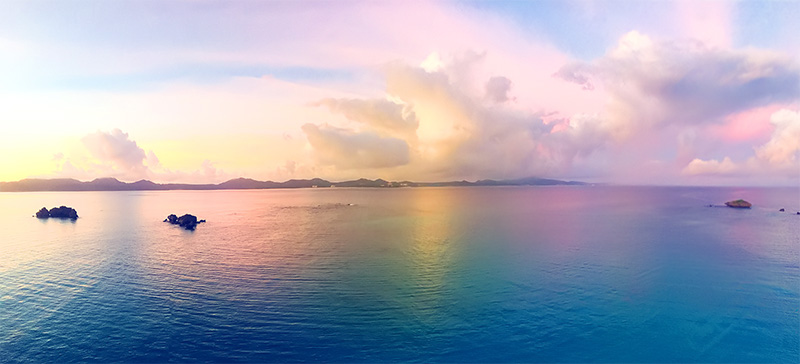

🌸 봄의 낭만
🌸 봄의 낭만
📍 경북 경주시
경주 보문단지 & 첨성대
연분홍 벚꽃이 흩날리는 보문호수와 유채꽃·튤립이 반겨주는 천년 고도의 밤 산책 코스.
계절마다 전혀 다른 매력으로 피어나는 우리나라의 대표 여행지를 만나보세요.
🌸 봄의 낭만
연분홍 벚꽃이 흩날리는 보문호수와 유채꽃·튤립이 반겨주는 천년 고도의 밤 산책 코스.
한국의 아름다운 길 100선! 10km에 걸쳐 노란 유채꽃과 벚꽃 터널이 이어지는 드라이브 천국.
 🌸 봄의 전령
🌸 봄의 전령
지리산 자락을 노랗게 물들이는 산수유꽃과 맑은 서시천 계곡 돌담길이 선사하는 평화로운 정취.
 🌊 시원한 바다
🌊 시원한 바다
탁 트인 동해바다와 솔향 가득한 해안길, 안목 커피거리에서 즐기는 에스프레소의 여유.
 🌊 에메랄드빛
🌊 에메랄드빛
투명한 에메랄드빛 바다와 눈앞에 비양도가 그림처럼 펼쳐지는 서쪽 최고의 힐링 해변.

🏄 액티비티이국적인 라탄 파라솔과 비치 바, 시원한 파도를 가르는 서핑의 열정과 낭만이 넘치는 핫플.
 🍁 황금빛 노을
🍁 황금빛 노을
바람 따라 사각거리는 광활한 황금빛 갈대밭과 용산전망대에서 내려다보는 붉은 S자 수로 낙조.
 🍁 명품 단풍
🍁 명품 단풍
오색 단풍 터널 사이를 지나는 모노레일과 새하얀 자작나무 숲길이 전하는 깊은 가을의 힐링.
소백산 고갯길을 따라 화려하게 물든 단풍 파노라마와 남한강에 우뚝 솟은 도담삼봉의 비경.
끝없이 펼쳐진 새하얀 눈밭과 능선 위의 나무 움막, 한국의 알프스라 불리는 겨울 설경의 정점.
 ❄️ 겨울왕국
❄️ 겨울왕국
높이 60m 거대한 절벽 전체가 푸른빛 얼음 폭포로 변신하여 마치 겨울왕국에 온 듯한 신비로움.
 ❄️ 붉은 동백
❄️ 붉은 동백
하얀 겨울 속에 붉게 만개한 애기동백꽃 군락지. 창문 너머 동백 액자 포토존이 필수 코스.